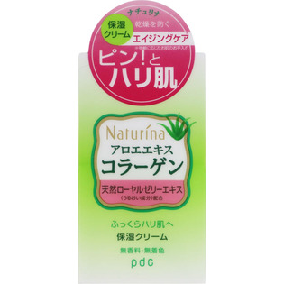
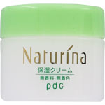

返回列表
产品名称：ナチュリナ 保湿クリーム

ｐｄｃ ナチュリナ 保湿クリーム ６０ｇ
メーカー ｐｄｃ
JANコード 4961989115252
商品の特徴
無香料・無着色
- 成分・分量
- ＜成分＞水、ミネラルオイル、ＢＧ、グリセリン、セタノール、ステアリン酸ソルビタン、ジメチコン、アロエベラエキス－１、加水分解コラーゲン、水溶性コラーゲン、ローヤルゼリーエキス、ミツロウ、水酸化Ｎａ、ステアリン酸ＰＥＧ－４０、ラウレス－９、キサンタンガム、ヘキサ（ヒドロキシステアリン酸／ステアリン酸／ロジン酸）ジペンタエリスリチル、（アクリレーツ／アクリル酸アルキル（Ｃ１０－３０））クロスポリマー、フェノキシエタノール、メチルパラベン、プロピルパラベン
- 用法及び用量
- ＜使用方法＞
化粧水または乳液の後、適量を手にとり、お肌になじませてください。